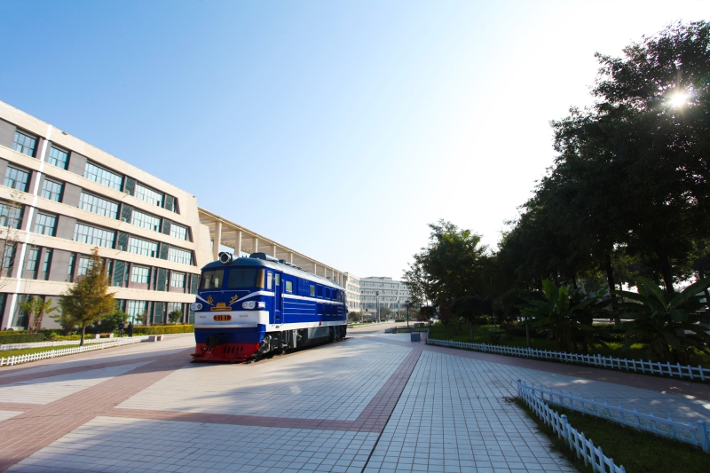

0+
年办学历史
0+
在校学生
0%
就业率
0亩
校园面积
SCROLL
01
学校概况
 "我爱陕铁院"景观
"我爱陕铁院"景观
陕西铁路工程职业技术学院位于陕西省渭南市，是国家"双高计划"高水平专业群建设单位、国家示范性高等职业院校。
学校始建于1973年，原名渭南铁路工程学校，2003年升格为高职院校。以铁路工程类专业为特色，形成了以铁道工程、城市轨道交通、测绘工程、道路桥梁等为核心的特色专业群，被誉为"铁路建设者的黄埔军校"。
地理位置陕西省渭南市，毗邻古都西安
办学规模占地900余亩，40余个专业
荣誉资质国家双高计划 / 全国就业50强
02
办学特色
01
铁路特色鲜明
聚焦铁路基础设施建设与维护，覆盖高铁、地铁、城轨多领域
02
校企深度融合
与中国中铁、中国铁建等央企深度合作，"订单式"培养
03
实训条件一流
全国领先铁路综合实训基地，设备总值超2亿元
04
师资力量雄厚
专任教师700余人，教授副教授占比超40%
05
国际合作广泛
参与"一带一路"铁路建设人才培养
06
技能竞赛突出
全国技能大赛屡获佳绩，多赛项位居全国前列
03
院系专业

铁道工程学院
学校历史最悠久、最具特色的二级学院。依托铁路行业优势，培养掌握铁路线路、桥梁、隧道施工与维护技术的高素质技术技能人才，毕业生遍布全国各大铁路局和工程局。

城轨工程学院
紧跟城市轨道交通发展潮流，专注地铁、轻轨、单轨等基础设施建设与维护人才培养，与全国多家地铁公司建立深度合作关系。

测绘工程学院
拥有全国领先的测绘实训条件，涵盖GPS、无人机航测、三维激光扫描等前沿技术。学生在全国测绘技能大赛中常年保持优异成绩。

道桥与建筑学院
培养公路、桥梁、建筑等领域的施工与管理人才，注重实践能力培养，与多家大型建筑企业保持密切合作关系。

工程管理与物流学院
聚焦工程项目管理、物资管理与供应链领域，为铁路和基建行业培养既懂技术又善管理的复合型人才。

机电工程学院
以铁路机电设备维护和智能制造为特色，培养掌握机电一体化、铁道供电、焊接等技术的高素质技能人才。
04
校园生活
五育广场
德智体美劳全面发展的校园文化中心
教学实训楼
现代化教学与实验设施

田径场
标准化运动场地

高铁实训基地
全国领先的铁路实训平台

巴山精神文化广场
传承铁路精神的文化育人阵地

学生公寓
温馨舒适的住宿环境

GRADUATE EMPLOYMENT
0%
毕业生就业率，连续多年保持高位
合作企业
中国中铁
全球最大基建企业之一中国铁建
世界500强各地地铁
北上广深及西安等铁路局集团
全国18个铁路局中国中车
全球轨装龙头企业海外项目
"一带一路"铁路建设就业优势
01
央企直招每年百余家企业进校招聘，央企占比超60%
02
订单培养与企业联合开设"订单班"，毕业即就业
03
薪资可观毕业生起薪普遍高于同类院校平均水平
04
前景广阔铁路和城轨行业持续扩张，人才需求旺盛